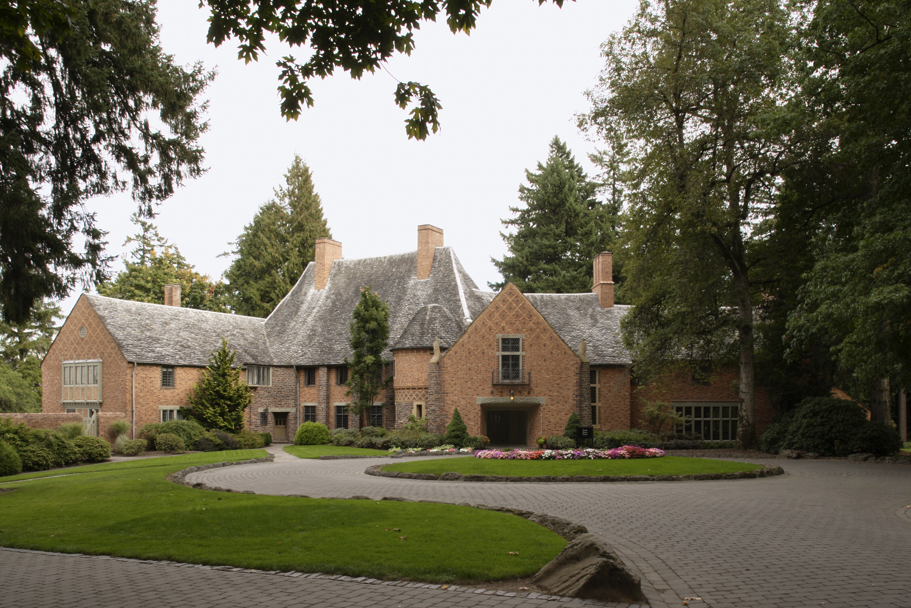

Postscript HTTP Server

By Pim Trouerbach
Why Would Anyone Want To Do This?
Postscript is langauge mainly centered around PDFs and graphics. I personally have no interest in making graphics or fractals so I decided to see if an HTTP server was possible with a language that doesnt support basic network functions.
The inspiration behind this project came from a similar project where someone created a HTTP server in bash.
The 3 basic components to an HTTP server are
- Read the commmand
- Check if the connection is persistent
- Respond to the request
Lets Prove This is PostScript
If we look at the headers of the request in developer tools we see various things:
- The server responding is httPS/1.6
- The relative content length
- The relative content type
- Along with a request for the title picture above
Now that we have seen the headers that are required lets look at examples of content we can serve:
Pictures:

GIFs: